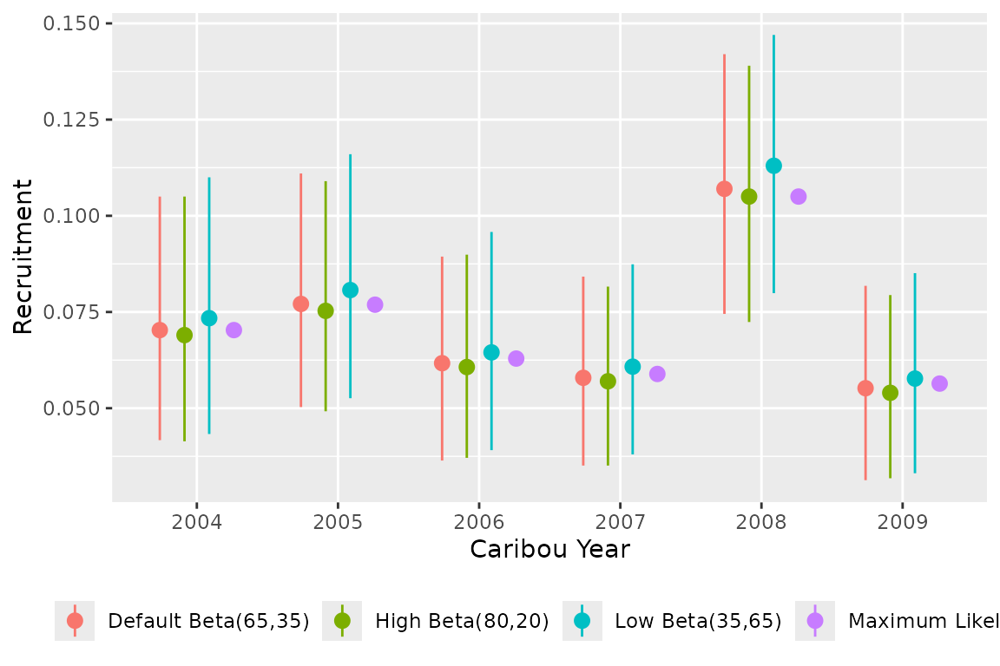
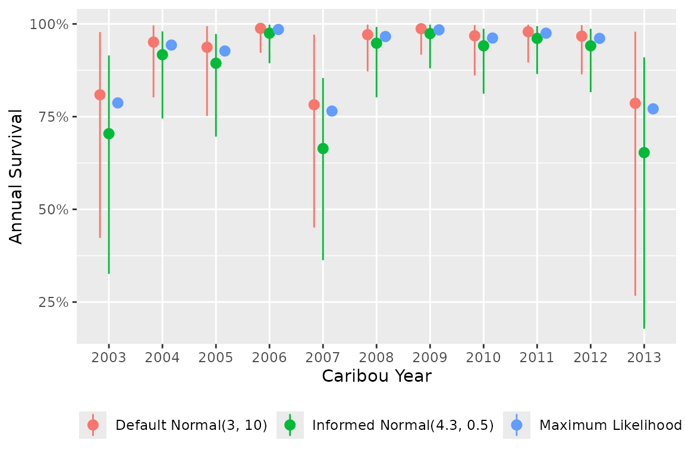

A prior distribution represents the existing uncertainty in the value
of an unknown parameter. The influence of a prior on the posterior
distribution will decrease as the number of observations increases.
bboutools uses weakly informative priors by default [@gelman_prior_2017;
@mcelreath_statistical_2016].
If the user is interested in fitting models without priors, see
bb_fit_recruitment_ml() and
bb_fit_survival_ml(), which have identical models but use a
frequentist approach (Maximum Likelihood) to parameter estimation.
Models fit with Maximum Likelihood are equivalent to Bayesian models
with completely uninformative priors [@mcelreath_statistical_2016].
Given the full model, the expected survival probability for the \(i^{th}\) year and \(j^{th}\) month is \[\text{logit}(Survival[i,j]) = b0 + bAnnual[i] + bMonth[j] + bYear \cdot Year[i]\] Where \(bAnnual\) can be a fixed or random effect of categorical year on the intercept on the log-odds scale and \(Year\) is the scaled continuous year.
This model has the following default priors in
bboutools
\[sAnnual \sim Exponential(1) \\ bAnnual \sim Normal(0, sd = sAnnual)\]
Month random effect \[sMonth \sim Exponential(1)\\ bMonth \sim Normal(0, sd = sMonth)\]
Year continuous effect \[bYear \sim Normal(0, sd = 2)\]
Given the full model, the expected recruitment (calves per adult female) for the \(i^{th}\) year is \[logit(Recruitment[i]) = b0 + bAnnual[i] + bYear \cdot Year[i]\] where \(bAnnual\) can be a fixed or random effect of categorical year on the intercept on the log scale and \(Year\) is the scaled continuous year.
The model has the following default priors in
bboutools
Intercept (log-odds scale) \[b0 \sim Normal(-1, sd = 5)\]
Categorical year fixed effect \[bAnnual[i] \sim Normal(0, sd = 5)\]
Categorical year random effect \[sAnnual \sim Exponential(1)\\ bAnnual \sim Normal(0, sd = sAnnual)\]
Continuous year effect \[bYear \sim Normal(0, sd = 2)\]
The recruitment model can also estimate the adult female proportion from observed Cows and Bulls \[Cows = adult\_female\_proportion \cdot (Cows + Bulls)\] Where the default prior for \(adult\_female\_proportion\) has a mode of 65% \[adult\_female\_proportion \sim Beta(65, 35)\]
As an example of the influence of priors on parameter estimates, we tighten the standard deviation for the fixed effect of categorical year on the intercept of monthly survival probability. The equivalent maximum likelihood model is also fit for comparison.
set.seed(1)
data <- bboudata::bbousurv_c
# force model to fit fixed year effect, use default priors
fit <- bb_fit_survival(data,
min_random_year = Inf,
quiet = TRUE)
# tighten prior on bAnnual by changing SD from default 10 to 1
fit_prior <- bb_fit_survival(data,
min_random_year = Inf, quiet = TRUE,
priors = c("bAnnual_sd" = 1)
)
# fit maximum likelihood model for comparison
fit_ml <- bb_fit_survival_ml(data,
min_random_year = Inf,
quiet = TRUE)
The Bayesian model with vague priors (default) has annual survival estimates that closely match the Maximum Likelihood estimates, whereas the Bayesian model with a tighter prior on the year fixed effect standard deviation results in estimates that are pulled in toward the mean. If this behaviour is desirable (i.e., to place less trust in extreme estimates), a model with a year random effect can be fit.
As another example, the user might strongly believe (i.e., based on literature or biological understanding) that the true adult female proportion is 65%. We compare estimates from very informative, informative (default) and vague priors on \(adult\_female\_proportion\), along with the maximum likelihood estimates.
set.seed(1)
data <- bboudata::bbourecruit_c
fit <- bb_fit_recruitment(data,
adult_female_proportion = NULL,
quiet = TRUE)
fit_inf <- bb_fit_recruitment(data,
adult_female_proportion = NULL,
quiet = TRUE,
priors = c(
"adult_female_proportion_alpha" = 650,
"adult_female_proportion_beta" = 350
)
)
fit_vague <- bb_fit_recruitment(data,
adult_female_proportion = NULL,
quiet = TRUE,
priors = c(
"adult_female_proportion_alpha" = 1,
"adult_female_proportion_beta" = 1
)
)
fit_ml <- bb_fit_recruitment_ml(data,
adult_female_proportion = NULL,
quiet = TRUE)
As with the above example, the adult female proportion estimate for a Bayesian model with vague priors closely matches the Maximum Likelihood estimate, whereas the Bayesian model with informative prior gives less weight to the data.
The \(adult\_female\_proportion\)
can also simply be fixed. See bb_fit_recruitment() for
details.